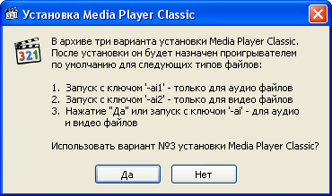
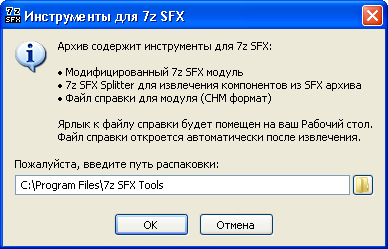
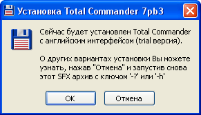
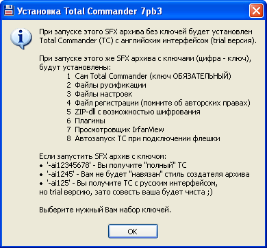
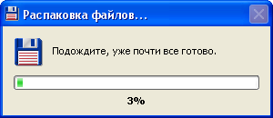
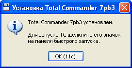

Configuration file example |
Description of SFX archive operation |
|---|---|
#1 ;!@Install@!UTF-8! RunProgram="setup.exe /s" GUIMode="2" ;!@InstallEnd@! |
This is a switchless silent SFX. When you launch this SFX it will silently (with no extraction dialog windows displayed, GUIMode="2") unpack its content into a temporary folder and run setup.exe /s for the silent software installation. The temporary folder will be deleted after the installation. |
#2 ;!@Install@!UTF-8! RunProgram="setup.exe /s" InstallPath="%PROGRAMFILES%\\test" ExtractTitle="Installing a virus..." GUIMode="1" SelfDelete="1" ;!@InstallEnd@! |
This is a switchless SFX. When you run this SFX it will scare the user to death with the extraction dialog titled "Installing a virus...", but without the "Cancel" button (GUIMode="1") while unpacking its content to the %ProgramFiles%\test folder. After that it will run setup.exe /s for the silent software installation. The SFX will be deleted after the installation (if it was launched from the hard drive). The %ProgramFiles%\test folder will NOT be deleted after the installation. |
#3 ;!@Install@!UTF-8! BeginPrompt="Install this program?" ExtractTitle="Preparing the installation..." RunProgram="setup.exe" AutoInstall="setup.exe /s" ;!@InstallEnd@! |
This SFX can be used either for an interactive installation or for a totally silent installation with the corresponding switches. If you run this SFX without switches, it will show you the " Install this program?" dialog window with "Yes" and "No" buttons. Clicking "Yes" extracts the SFX into a temp folder with the "Preparing the installation..." title and the native extraction dialog with "Cancel" and "Close" buttons. Setup.exe will run immediately after that, allowing user to control the software installation process. If you click "Yes" while holding down the [SHIFT] key (invokes AutoInstall option), the setup.exe will run with the /s switch for the silent software installation. If you run the same SFX with -ai -gm2 switches, then the "Install this program?" dialog window will be suppressed by '-ai' switch, AutoInstall parameter (setup.exe /s) will be invoked (-ai), and no extraction dialog will be displayed (-gm2). Either way the temporary folder will be deleted after the installation. |
#4 ;!@Install@!UTF-8!
Title="Media Player Classic installation"
BeginPrompt="There are three Media Player Classic installation scenarios in this archive.\nAfter the installation it becomes the default player\nfor the following file types:\n\n1. Launching with '-ai1' switch - for audio files only\n2. Launching with '-ai2' switch - for video files only\n3. Clicking \"Yes\" or launching with '-ai' switch - both for\n audio and video files.\n\nWould you like to begin the Media Player Classic installation scenario #3?"
InstallPath="%windir%\system32"
GUIMode="1"
GUIFlags="1+8+2048"
Shortcut="Du,{%%T\\mplayerc.exe},{},{},{Media Player Classic},{Media Player Classic}"
Shortcut="Pu,{%%T\\mplayerc.exe},{},{},{Media Player Classic},{Media Player Classic}"
RunProgram="mplayerc.exe /regaud /regvid"
|
Media Player Classic and its INI file are packed into an SFX archive. If you launch the archive without switches, user will see the following windows. The standard icon has been replaced with the module icon by using flag 2048 of 'GUIFlags' parameter.  Clicking the "Yes" button extracts the SFX to system32 folder. The "Cancel" button is hidden during extraction and the "Close" button is blocked, the percentage is displayed on the right of the window title, and Windows XP styles are used. Shortcuts on the Desktop and in the Programs menu with 'Media Player Classic' name and description are created for the current user. Launching the same SFX with "-ai -gm2" switches accomplishes the same task silently with no visible dialog windows. Similarly, '-ai1' or '-ai2' switch in conjunction with '-gm2' switch silently install and associate Media Player Classic with audio and video files respectively. |
#5 ;!@Install@!UTF-8!
Title="7z SFX Tools"
BeginPrompt="The archive contains 7z SFX Tools:\n\n Modified 7z SFX module\n 7z SFX Splitter for extracting components from an SFX archive\n Help file for the module (CHM format)\n\nShortcut to the help file will be created on your Desktop.\nThe help file will be launched automatically when extracted."
CancelPrompt="Do you want to cancel the extraction?"
ExtractDialogText="Please, wait..."
ExtractPathText="Please, enter the extraction path:"
ExtractTitle="Extracting..."
GUIFlags="8+32+64+256+4096"
GUIMode="1"
InstallPath="%ProgramFiles%\\7z SFX Tools"
OverwriteMode="2"
RunProgram="nowait:\"7zSD_EN.chm\""
Shortcut="Du,{%%T\\7zSD_EN.chm},{},{},{Help file for 7z SFX modified module},{Everything about 7-zip SFX modified module},{},{%%T\\7ZSplit.exe},{0}"
;!@InstallEnd@!
|
This is an interactive mode with the option of choosing the extraction folder. 7z SFX tools are packed into an archive. When the SFX archive is launched, the following window is displayed:  Standard buttons "Yes" and "No" have been replaced with "OK" and "Cancel" respectively by using flag 4096 of 'GUIFlags' parameter. An attempt to cancel the extraction by clicking "Cancel" causes the 'CancelPrompt' dialog window to be displayed. The extraction folder can be changed by user. The default path is retrieved from 'InstallPath' parameter, while the extraction dialog is combined with 'BeginPrompt' by using GUIFlags="8+32+64+256". Only the older files will be overwritten during the extraction process ('OverwriteMode'). A shortcut to the help file will be created on the current user's Desktop ("Du" for the 'type' parameter). The shortcut icon is taken from 7ZSplit.exe file), The help file is launched automatically when extraction is complete. |
#6 ;!@Install@!UTF-8! Title="Total Commander 7 installation" BeginPrompt="Total Commander file manager will be installed\nnow with English interface language.\n\nLearn about other installation scenarios\nby pressing \"Cancel\" and launching this\nSFX again with '-?' or '-h' switch." ; Installation folder SetEnvironment="PathTC=%ProgramFiles%\\TOOLS\\Total Commander" SetEnvironment="Var1=%PathTC%\\" SetEnvironment="Var2=\"%PathTC%\"" ; Deleting the previous installation registry keys SetEnvironment="DelKey1=hidcon:cmd /c reg delete \"hkcu\\Software\\Ghisler\" /f" SetEnvironment="DelKey2=hidcon:cmd /c reg delete \"hklm\\Software\\Ghisler\" /f" ; "Clean" TC installation RunProgram="%DelKey1%" RunProgram="%DelKey2%" RunProgram="fm20:tcmd7pb3_E.exe" AutoInstall1="%DelKey1%" AutoInstall1="%DelKey2%" AutoInstall1="fm20:tcmd7pb3_E.exe" ; Russian localization AutoInstall2="hidcon:cmd /c xcopy Language \"%Var1%Language\" /s /e /i /y" AutoInstall2="hidcon:cmd /c copy !ReadMe_Rus.txt %Var2%" AutoInstall2="hidcon:cmd /c copy Hist_rus.txt %Var2%" AutoInstall2="hidcon:cmd /c copy Keyb_rus.txt %Var2%" ; Personal settings AutoInstall3="hidcon:cmd /c copy Default.bar %Var2%" AutoInstall3="hidcon:cmd /c copy default.br2 %Var2%" AutoInstall3="hidcon:cmd /c copy wcx_ftp.ini %Var2%" AutoInstall3="hidcon:cmd /c copy wincmd.ini %Var2%" ; Licnese key |
Total Commander, a popular file manager, is packed into the SFX archive along with additional files to enhance user experience. If the SFX is launched without switches, user is presented with 'BeginPrompt' dialog window. The custom icon and buttons "OK"- "Cancel" are defined by GUIFlags="...+2048+4096".  If user wants to learn about other installation options, one can press the "Cancel" button, and then launch the SFX archive again with ' -?' or '-h' switches. The following 'HelpText' window will be displayed.  After deciding which installation option to go with, one can launch the SFX archive with the corresponding switches. For example, by using' -ai135' you can bypass 'BeginPrompt' dialog window (suppressed by '-aiX' switch), and display the extraction window only.  Its appearance is controlled by GUIFlags="2+4+8+16+32...", while the text is defined in 'ExtractTitle' è 'ExtractDialogText'. Total Commander installation is launched immediately after extraction. After the installation 'FinishMessage' dialog window is displayed (for any installation scenario as defined by 'fm20' prefix). The 20 second countdown is displayed on the "OK" button, and the window closes when time expires.  A shortcut to Total Commander will be created in the current user Quick Launch panel as defined by 'type' option with the value of "26" (an undocumented feature). If one runs the SFX archive with "-sfxconfig cfg.txt" switch, the output file "cfg.txt" will contain the configuration file used by the package author. Either scenario results in deletion of the temporary folder. |